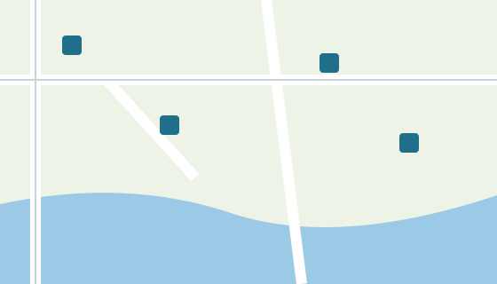

Places de parc publiques
La carte indique les parkings publics du centre. Les places sont gratuites pendant 30 minutes avec le disque.
Pour voir tous les détails du quartier, cliquez sur l'icône ronde en haut de la carte.

La carte indique les parkings publics du centre. Les places sont gratuites pendant 30 minutes avec le disque.
Pour voir tous les détails du quartier, cliquez sur l'icône ronde en haut de la carte.
